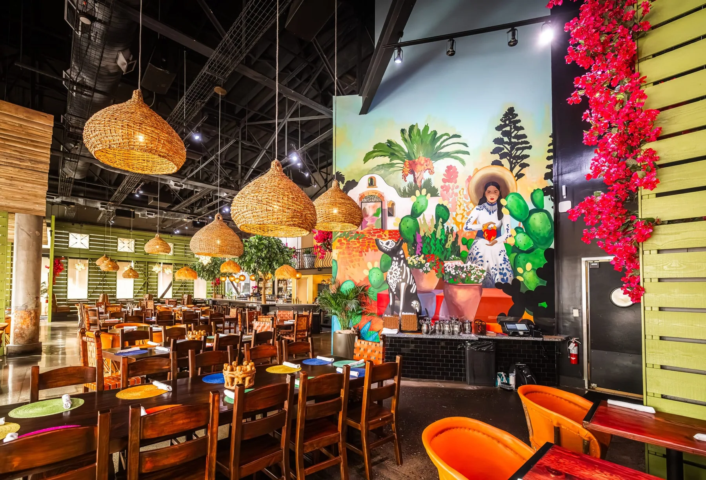

A celebration at Casa Lola
250 standing · 160 seated
Seated capacity includes the patio. Indoor seated capacity is 132. Layout and availability are confirmed by the events team.
Gather beneath the lights, make a toast, and let the Casa Lola team take care of your celebration.

From the first conversation to the final toast, our events team helps you choose the space and menu.
Inquire about an eventCall the events team: 916-442-8855250 standing · 160 seated
Seated capacity includes the patio. Indoor seated capacity is 132. Layout and availability are confirmed by the events team.
Share your date, guest count, and what you have in mind.
Use the inquiry link or call 916-442-8855. The team will confirm your date, space, menu and arrangements directly. An inquiry is not a confirmed booking.
Speak with the team about your group, food preferences, and dietary requirements. Menu options depend on your event and location.
Read MAC Hospitality’s event planning FAQs for current arrangements and requirements.